FMRD: Desktop-Based Data Entry Application
Howard Hamilton (hhamilton@soccermetrics.net)
1 Introduction
The Football Match Result Database (FMRD) stores and maintains the match result data needed to support football (soccer) research activities for the benefit of the football analytics community. The current version of the database handles domestic league competitions.
The Football Match Result Database does the following:
- Maintain data on matches that occur within football league competitions, whether among national teams or domestic clubs.
- Maintain complete top-level information on the football match, including match date, competition name and stage, participating teams, venues, and environmental conditions.
- Maintain complete information on macro-events that occur during a match, including goals, penalties, disciplinary incidents, and substitutions.
- Maintain complete information on participating personnel, such as players, managers, and match referees.
2 System Requirements
Requires:
- Python up to version 2.7 (3.0 not supported)
- PostgreSQL (Any version in last 2-3 years should work, but 7.0+ preferred)
- Perl (DBI package)
FMRD was originally coded on a 64-bit Linux operating system (Ubuntu Lucid Lynx), but was built using the Qt and PyQt libraries, so it should be able to function across Windows and Mac platforms. This has not been tested, however.
3 Installation
3.1 Software download
Check out FMRD from the Downloads section of the website located at
http://www.fmrd-site.org/downloads/
Will add information about binary executable.
3.2 Database setup
Will have to work with system administrator to run a local Postgres server. Should be given a username and password for access.
Go to sql/ directory and run the installdb-fmrd shell script to create and set up FMRD:
> cd sql/
> installdb-fmrd.sh
The following information is required:
- Database name
- User name
- User password
- Maximum number of rounds in league competition
The script will create a database with tables and views from the FMRD template and populate the base tables. These tables support the main tables of the database and will be altered very seldom by the user.
4 Logging In
The user can populate the main tables of the FMRD with the data-entry application. To run the data-entry application, enter the following at the command prompt:
>./fmrd-main.py
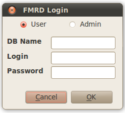
Figure 1 Login Window
The user will be challenged by the login dialog to enter the database name, username and password. There is also a pair of radio buttons along the top of the dialog to select between data-entry switchboards for users and administrators.
After the login information is entered, the user can authenticate by pressing the Ok button (keyboard shortcut Alt-O). If the user wishes to exit the program, press the Cancel button (Alt-C).
The application will close on three consecutive failed attempts.
5 The Data Entry Switchboards
The switchboard is the centerpiece of the data-entry application. It is composed of buttons that open dialog windows that allow the user to enter match information. There are two switchboards: a "user" switchboard with a basic menu bar that allows the user to quit the application and display About information, and an "administrator" switchboard that includes a Setup menu for access to the base tables. Database operations do not occur at the switchboard level.
| 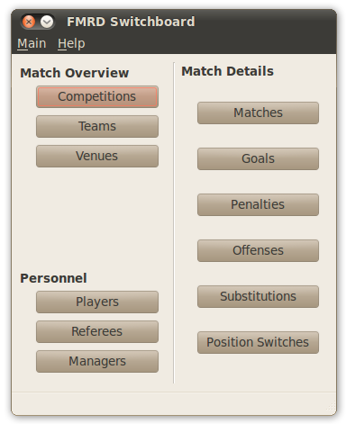 | 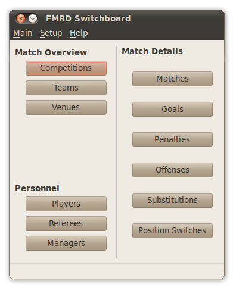 |
Figure 2 Main switchboard for data-entry application.
The buttons open the data-entry dialogs and are grouped in three categories. The dialogs related to the high-level details of the match are grouped under "Match Overview", the dialogs related to the players, referees, and managers are in the "Personnel" section, and the dialogs pertaining to the football match are found under "Match Details".
The menus are organized accordingly with keyboard shortcuts in parentheses:
-
Main menu (Alt-M)
- Quit (Ctrl-Q, or Alt-M,Q): Close application.
-
Setup menu (Alt-S)
- Overview submenu (Alt-S,O): Access base tables related to high-level match information.
- Personnel submenu (Alt-S,P): Access base tables related to personnel.
- Events submenu (Alt-S,E): Access base tables related to match events.
-
Help menu (Alt-H)
- About (F1, or Alt-H,A): Show information window on application.
6 Getting Started with Data Entry
This section describes the data entry dialogs on the application. For each dialog there is a read-only field for the ID number of the current record and fields that populate the underlying database table by entering data or selecting from a data list. Unless stated otherwise, the fields cannot be left blank or unselected.
It is important to remember that the database builds on itself. The data entry application is designed so that the user cannot enter match information before entering information about the players involved, to give one example. The match overview and personnel tables must be populated with a minimum number of records before the match detail dialogs are enabled.
All of the dialogs, with the exception of the Environmental Conditions dialog, have navigation buttons that allow the user to access records in sequential order, as well as skip to either the first or last record. There are three other buttons in the dialogs:
- an "Add" (Alt-A) button that allows the user to append a new record to the end of the underlying table,
- a "Delete" (Alt-D) button that erases the current record (subject to permission by the database), and
- a "Close" (Alt-C) button that saves the current record to the database and closes the dialog.
6.1 Pre-Competition Data
6.1.1 Competitions
The Competitions dialog allows entry of the names of the league competitions. All matches are tied to a specific league competition, so the Competitions table in the FMRD must be populated with at least one entry. There is only one field that can be accessed by the user, which is the Competition field. The field cannot be left blank.
If data from multiple league seasons are to be contained in a single database, it is recommended that the user differentiate the competition names, such as "2009-10 English Premier League" and "2010-11 English Premier League".
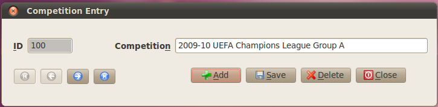
Figure 3 Competition data entry dialog.
6.1.2 Teams
The Teams dialog allows entry of the team name. Match venues can be associated with a home team, while matches, match lineups, and match events must be associated with teams. There is only one field that can be accessed by the user, which is the Teams field. This field cannot be left blank.
Users typically enter the official name of the team or its popular name. Of course, the entry is at the discretion of the user, but it should be distinctive from other names in the database.
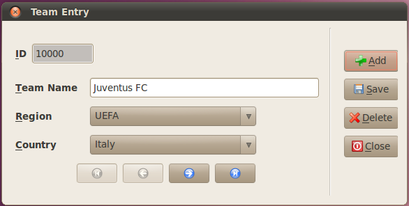
Figure 4 Team data entry dialog.
6.1.3 Venues
The Venues dialog allows for entry of data associated with football venues. This dialog is opened if there is more than one entry in the Teams database table.
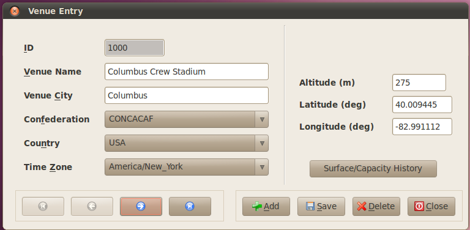
Figure 5 Venue data entry dialog.
The following fields are in the Venues dialog:
- Venue Name (Alt-V): Self-explanatory editable text entry.
- Venue City (Alt-C): Self-explanatory editable text entry
- Confederation (Alt-F): The confederation in which the venue resides (AFC, CAF, CONCACAF, CONMEBOL, OFC, UEFA). This is not stored in the database but used to filter the Country field.
- Country (Alt-N): The country in which the venue resides.
- Home Team (Alt-T): The team that plays the majority of its matches at the venue. This field can be left unselected.
- Altitude: The altitude above mean sea level (MSL) of the venue, in meters.
- Latitude: The geographical latitude of the venue, in decimal degrees.
- Longitude: The geographical longitude of the venue, in decimal degrees.
6.1.4 Players
The Players dialog allows for entry of player data. One thing that might be surprising to users who use other sports databases is that the team associated with the player is not entered here; rather, the association is handled via the match lineups. Thus the Players table is easier to maintain over time.
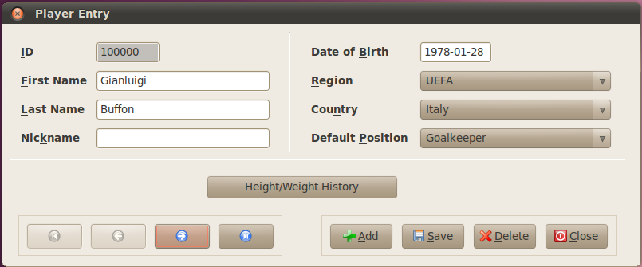
Figure 6 Player data entry dialog.
The following fields are in the Players dialog:
- First Name (Alt-F): The first name of the player.
- Last Name (Alt-L): The last name of the player.
- Nickname (Alt-K): The nickname or popular name of the player. If there is no popular name this field is left blank.
- Date of Birth (Alt-B): The player’s date of birth, in ISO YYYY-MM-DD format.
- Region (Alt-R): The confederation of the country for which the player holds FIFA eligibility. This field is selected in order to filter the Country field.
- Country (Alt-N): The country for which the player holds FIFA eligibility.
- Default Position (Alt-P): The default position of the player. This is used to set the Position field in the Match Lineups dialog to an initial index.
6.1.5 Managers
The Managers dialog allows the user to enter manager data. As in the Player dialog, the team associated with the manager is not selected here but instead handled by the Match dialog.
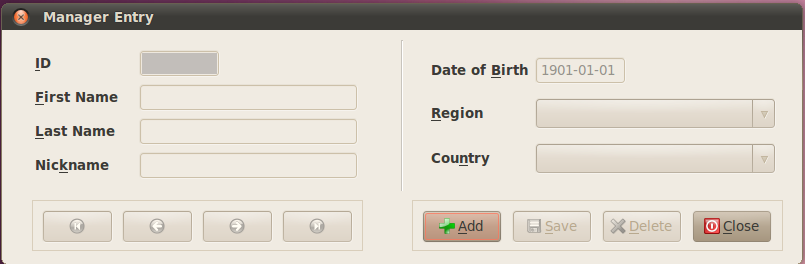
Figure 7 Manager data entry dialog.
The following fields are in the Managers dialog:
- First Name (Alt-F): The first name of the manager.
- Last Name (Alt-L): The last name of the manager.
- Nickname (Alt-K): The nickname or popular name of the manager. If there is no popular name the field is left blank.
- Date of Birth (Alt-B): The manager’s date of birth, in ISO YYYY-MM-DD format.
- Region (Alt-R): The confederation of the country for which the manager holds citizenship. This field is selected in order to filter the Country field.
- Country (Alt-N): The country for which the manager holds citizenship.
6.1.6 Referees
The Referees dialog allows the user to enter data on the central referee.
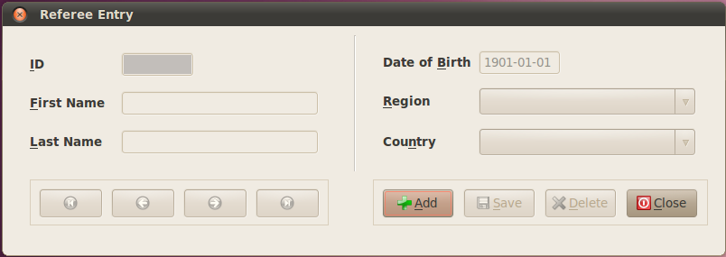
Figure 8 Referee data entry dialog.
The following fields are in the Referee dialog:
- First Name (Alt-F): The first name of the referee.
- Last Name (Alt-L): The last name of the referee.
- Date of Birth (Alt-B): The referee’s date of birth, in ISO YYYY-MM-DD format.
- Region (Alt-R): The confederation of the country for which the referee holds citizenship. This field is selected in order to filter the Country field.
- Country (Alt-N): The country for which the referee holds citizenship.
6.2 Pre-Match Data
6.2.1 Matches
The Match dialog is the central dialog in the data-entry process. It allows the user to enter high-level information on the match, such as its date, the competition and matchday to which the match belongs, the match venue and the central referee, the competing teams and associated managers, and the elapsed match time. This dialog will open only if the following pre-competition conditions have been met:
- At least one entry in Competition table
- At least one entry in Venues table
- At least one entry in Referees table
- At least two entries in Managers table
- At least two entries in Teams table
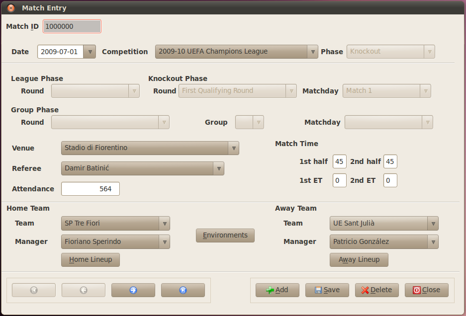
Figure 9 Match data entry dialog.
The following fields are in the Match dialog:
- Date: Date of the match in ISO YYYY-MM-DD format.
-
Match Overview:
- Competition: The competition to which the match belongs.
- Round: The matchday to which the match belongs.
- Venue: The match venue.
- Referee: The central referee for the match.
-
Match Time:
- 1st half: The elapsed time of the first half (including stoppage time), in minutes. Time must be positive and nonzero. Default elapsed time is 45.
- 2nd half: The elapsed time of the second half (including stoppage time), in minutes. Time must be nonnegative (zero minutes permitted). Default elapsed time is 45.
-
Home/Away Teams:
- Team: The home or away team listbox. When a team from one listbox is selected, the other listbox is filtered so that the same team cannot be selected in both listboxes.
- Manager: The manager listbox associated with the home or away team. When a manager from one listbox is selected, the other listbox is filtered so that the same manager cannot be selected in both listboxes.
The following buttons access subdialogs to the Match dialog:
- Home Lineups (Alt-H): Open Match Lineup subdialog for the home team. This button is activated only when the team and manager fields of the home team have been selected.
- Away Lineups (Alt-W): Open Match Lineup subdialog for the away team. This button is activated only when the team and manager fields of the away team have been selected.
- Environments (Alt-E): Open Environmental Conditions subdialog. This button is activated when the Match dialog is opened.
6.2.2 Environments
The Environmental Conditions subdialog records atmospheric conditions of the match. Entry of the environmental conditions is optional, but only those conditions associated with the current match can be changed.
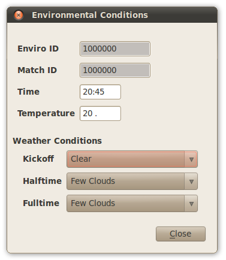
Figure 10 Environmental Conditions data entry dialog.
The following fields are in the Environmental Conditions dialog:
- Time: The kickoff time of the football match, in local time and in 24-hour time format (HH:MM).
- Temperature: The ambient temperature at kickoff, in degrees Celsius.
-
Weather Conditions: The predominate weather condition, using terms from NOAA National Weather Service. Collected at three intervals during the match:
- Kickoff
- Halftime
- Fulltime (End of Match)
6.2.3 Lineups
The Player Lineup subdialog is the second-most important dialog in the FMRD. It allows the user to designate the match lineup for a team, select starters, substitutes, and the captain. The match event dialogs draw their list of players from those in the match lineup. A match lineup must have exactly 11 starters, of which exactly one is the captain and exactly one the goalkeeper.
To assist the user there are status boxes along the bottom of the dialog that tabulate the number of starters, substitutes, captains and goalkeepers. The background of the boxes turn red if the number of players do not match requirements, and change to green when the requirements are met.
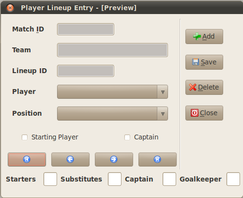
Figure 11 Match Lineup data entry dialog.
The following fields are in the Player Lineup dialog:
- Player: Player drawn from list of players in Player table.
- Position: Player’s position. Set to default position (defined in Player dialog).
- Starting Player: Checkbox to designate starting player. Left unchecked (default) if substitute.
- Captain: Checkbox to designate captain. Left unchecked by default.
6.3 In-Match Data
The following dialogs allow the user to input data on the match details. There must be entries in the Match Lineup table to enable the dialogs; otherwise, the following error message appears:

Figure 12 Error message for insufficient Match Lineup table.
The Match event dialogs use a series of listboxes to filter the database so that the user views (and inputs) data for a specific team in a specific match. Follow these steps to access the data:
- Upon opening the dialog, only the Competition listbox will be activated. Select the appropriate competition.
- The Rounds listbox will become active. The listbox will be populated with the matchdays for which there exist a competition’s matches in the database. Select the appropriate matchday.
- The Match listbox will become active. It will be populated with the matches of the selected competition and matchday. Select the appropriate match.
Upon selecting the match, the rest of the dialog will become active if there are entries in the database corresponding to the selected match, matchday, and competition, or only the Add/Close buttons will become active in the case of no entries.
If there are entries in the database that correspond to the selected match, matchday, and competition, the dialog will start at the first of the entries. The user can advance through the entries, add a new entry, or modify current entries.
Follow these steps to add new entries:
- Press the "Add" button. An empty record will be formed at the end of the database table. The Team listbox will be active as well as the navigation buttons.
- The Team listbox will contain the two teams competing in the match. Select the appropriate team.
- The rest of the dialog will be activated. The Player listbox will be active and contain the players of the selected team who are in the match lineup. Select the appropriate player and complete the remainder of the dialog.
6.3.1 Goals
The Goals dialog records goals scored in open play, including own goals. Goals scored from a penalty kick are recorded in the Penalty dialog.
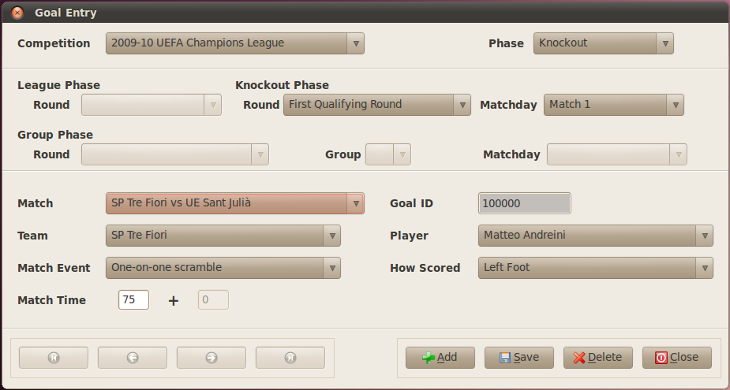
Figure 13 (Open Play) Goals data entry dialog.
The following fields are in the Goals dialog:
- Team: The team to which the goal is credited.
- Player: The player who is credited with the goal. The Players listbox contains all of the players, starters or substitutes, who are in the match lineup.
- Match Event: The type of on-field play that resulted in the goal.
- How Scored: The body part used to score the goal.
- Match Time: The time at which the goal was scored, in whole minutes. If the match time is 45 or 90, the second box is activated so that the user may enter the stoppage time, also in whole minutes.
6.3.2 Penalties
The Penalties dialog records all penalty kick events in a match, regardless of outcome.
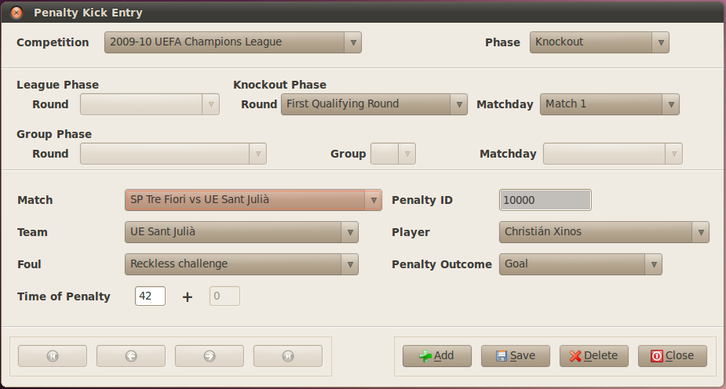
Figure 14 Penalties data entry dialog.
The following fields are in the Penalties dialog:
- Team: The team to which the penalty kick is awarded.
- Player: The player who takes the penalty kick. The Players listbox contains all of the players, starters or substitutes, who are in the match lineup.
- Foul: The description of the foul that drew the penalty kick decision.
- Penalty Outcome: The final outcome of the penalty kick after all retakes, if necessary. It can be either a goal or no goal for various reasons.
- Match Time: The time at which the penalty kick occurred, in whole minutes. If the match time is 45 or 90, the second box is activated so that the user may enter the stoppage time, also in whole minutes.
6.3.3 Offenses
The Offenses dialog records all fouls that resulted in a disciplinary card being issued by the central referee.
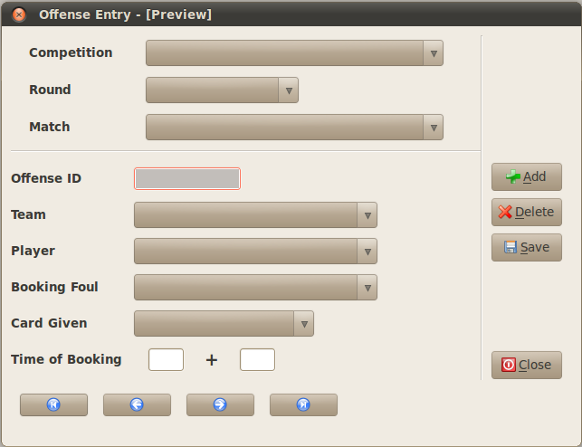
Figure 15 Offenses data entry dialog.
The following fields are in the Offenses dialog:
- Team: The team to which the foul is charged.
- Player: The player who is charged with the foul. The Players listbox contains all of the players, starters or substitutes, who are in the match lineup.
- Booking Foul: The description of the foul that resulted in the booking by the referee.
- Card Given: The color of the disciplinary card shown by the referee. Yellow and red cards can be shown directly; if a second yellow card is shown, select "Yellow/Red".
- Match Time: The time at which the foul occurred, in whole minutes. If the match time is 45 or 90, the second box is activated so that the user may enter the stoppage time, also in whole minutes.
6.3.4 Substitutions
The Substitutions dialog records all substitutions that occurred in the match.
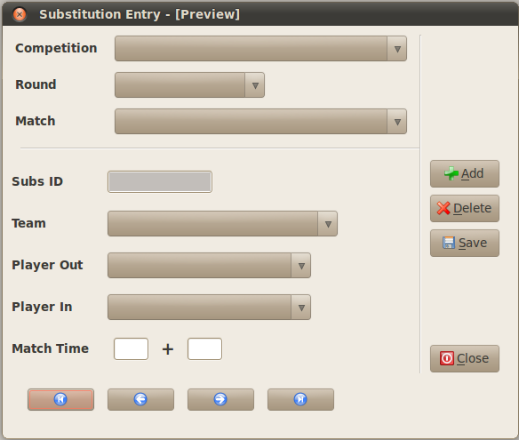
Figure 16 Substitutions data entry dialog.
The following fields are in the Substitutions dialog:
- Team: The team to which the substitution is credited.
-
Player Out: The player who exits the match to be replaced by Player In. The listbox contains all of the players who are in the match lineup and meet one of two criteria:
- Starting and not already substituted out of the match
- Non-starting and substituted into the match
- Player In: The player who enters the match to replace Player Out. The listbox contains all nonstarting players in the match lineup who have not already entered the match.
- Match Time: The time at which the substitution occurred, in whole minutes. If the match time is 45 or 90, the second box is activated so that the user may enter the stoppage time, also in whole minutes.
6.3.5 Position Switches
The Switch Position dialog is used to record on-field changes in position during a match. It accounts primarily for forced position changes in the event that a goalkeeper is sent off and a field player takes his place. It can be used to track tactical changes as well.
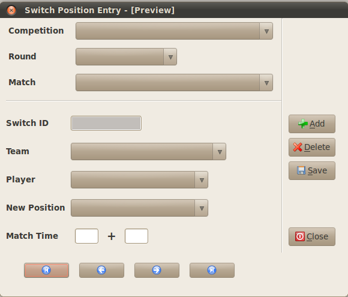
Figure 17 Position Switches data entry dialog.
The following fields are in the Switch Positions dialog:
- Team: The team to which the position switch is credited.
-
Player: The player who will switch on-field position. The listbox contains all of the players who are in the match lineup and meet one of two criteria:
- Starting and not already substituted out of the match
- Non-starting and substituted into the match
- New Position: The new field position of the player.
- Match Time: The time at which the position switch occurred, in whole minutes. If the match time is 45 or 90, the second box is activated so that the user may enter the stoppage time, also in whole minutes.
7 Altering the Base Tables
The base tables contain basic information about organizations, match events, and other descriptions and terms that are used by the main FMRD tables. You can access these tables via the Setup menu in the Administrator switchboard. Regular users should not have much need to alter the base tables in the FMRD. This description of the Setup menu is added for administrators and for completeness.
7.1 Overview Base Tables
To access the match overview base tables, activate the Setup menu at the top of the Administrator switchboard and then mouseover the Overview submenu.
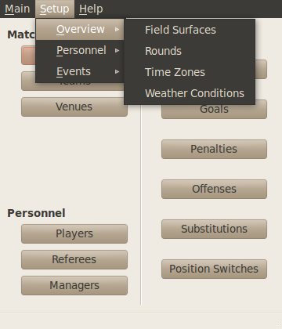
Figure 18 Overview submenu in Setup menu.
7.1.1 Competition Phase
The Competition Phase dialog allows the user to change the matchday descriptions in a league competition. In some leagues all of the teams play matches on the same day or weekend; in other leagues matches are spread out during the week. The Round Description field (Alt-R) is the only active field.
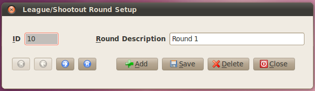
Figure 19 Competition Phase setup dialog.
7.1.2 Weather Conditions
The Weather Conditions dialog allows the user to edit the description of the predominate weather conditions in the football match. The descriptions are taken from NOAA’s National Weather Service in the USA. The Weather Conditions field (Alt-W) is the only active field.
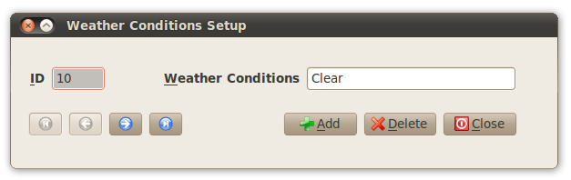
Figure 20 Weather Conditions setup dialog.
7.2 Personnel Base Tables
To access the personnel base tables, activate the Setup menu at the top of the Administrator switchboard and then mouseover the Personnel submenu.
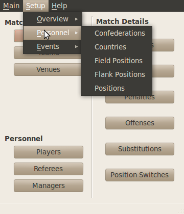
Figure 21 Personnel submenu in Setup menu.
7.2.1 Confederations
The Confederations dialog allows the user to edit the acronyms of the confederations in international football. The Confederations field (Alt-N) is the only active field.
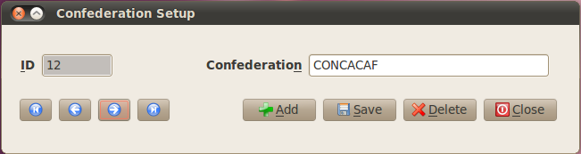
Figure 22 Confederations setup dialog.
7.2.2 Country
The Country dialog allows the user to edit the name of the country and pair the country with its home confederation. In FIFA terminology, a country is one with its own football association, so the United Kingdom is a country in the United Nations, but England, Scotland, Wales, and Northern Ireland are countries in FIFA.
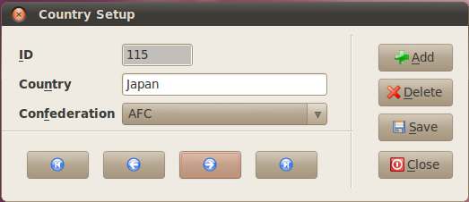
Figure 23 Country setup dialog.
The following fields are in the Country dialog:
- Country (Alt-N): The popular name of the member association in FIFA.
- Confederation (Alt-F): The confederation to which the member association belongs.
7.2.3 Field Positions
The Field Positions dialog allows the user to edit the generic descriptions of the positions on a football pitch. These descriptions must not contain information about the field location, such as "left back" or "right winger"; field locations are handled in the Flank Position dialog and table. In this dialog the Field Position (Alt-F) is the only active field.
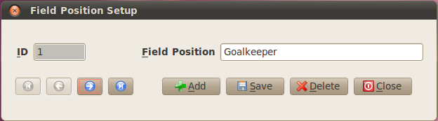
Figure 24 Field Position setup dialog.
7.2.4 Flank Positions
The Flank Positions dialog allows the user to edit the flank description that modifies the football position. The default field locations are "left", "right", "center/centre", or a blank entry to designate a generic location. Only the Flank Position field (Alt-F) is active.
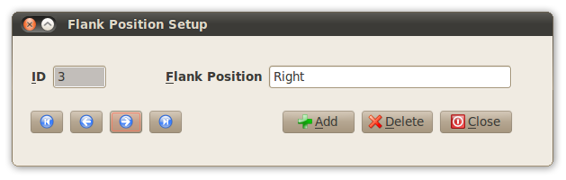
Figure 25 Flank position setup dialog.
7.2.5 Positions
The Positions dialog allows the user to edit the composite position of a football player that combines the flank and field position names.
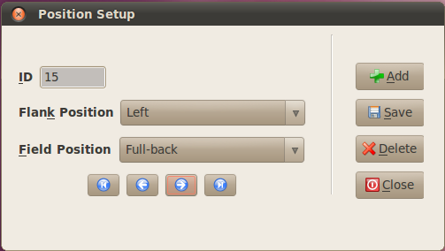
Figure 26 Positions setup dialog.
The following fields are in the Positions dialog:
- Flank Position (Alt-K): The sector of the football field, used as an adjective of the field position. To create a generic position such as "midfielder", select the blank description. Goalkeeper must have a blank flank position selected.
- Field Position (Alt-F): The field position of the football player.
7.3 Match Event Base Tables
To access the match event base tables, activate the Setup menu at the top of the Administrator switchboard and then mouseover the Events submenu.
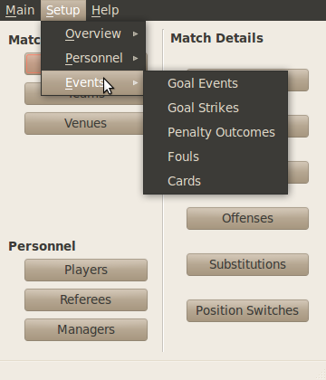
Figure 27 Events submenu in Setup menu.
7.3.1 Goal Events
The Goal Events dialog allows the user to edit descriptions of the on-field actions that ended in a goal scored from open play. The Goal Events field (Alt-G) is the only active field.
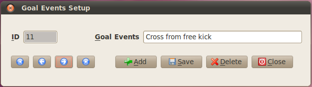
Figure 28 Goal Events setup dialog.
7.3.2 Goal Strikes Table
The Goal Strikes dialog allows the user to edit descriptions of the body parts with which the goal was scored. Examples include "left foot", "right foot", or "head". The Goal Strikes field (Alt-G) is the only active field.
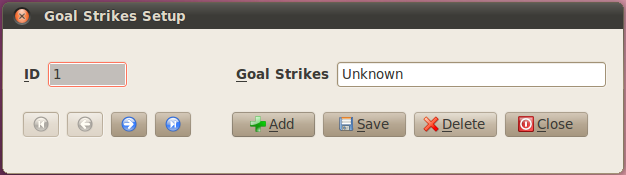
Figure 29 Goal Strikes setup dialog.
7.3.3 Penalty Outcomes Table
The Penalty Outcomes dialog allows the user to edit descriptions of penalty kick outcomes. Examples include "Goal" and "Hit Post". The Penalty Outcome field (Alt-P) is the only active field.

Figure 30 Penalty Outcomes setup dialog.
7.3.4 Fouls Table
The Fouls dialog allows the user to edit descriptions of actions that are often judged to be fouls. These data will be used to classify actions that led to penalty kicks and bookings. The Foul Description field (Alt-F) is the only active field.
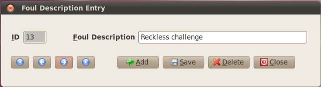
Figure 31 Foul Description setup dialog.
7.3.5 Cards Table
The Cards dialog allows the user to edit the color descriptions of the disciplinary card. The only descriptions used are "Yellow", "Yellow/Red", and "Red". The Card Description field (Alt-R) is the only active field.
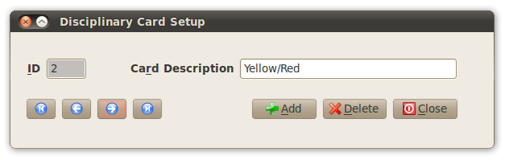
Figure 32 Disciplinary Card setup dialog.
Copyright (C) 2011 Howard Hamilton (hhamilton@soccermetrics.net)